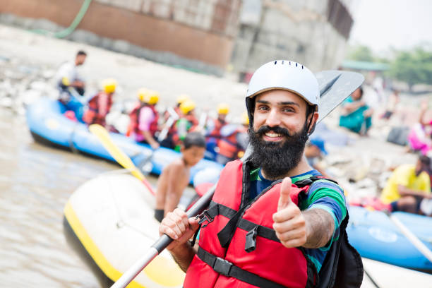

Nossa Missão

Nossa missão é proporcionar experiências inesquecíveis na natureza com segurança, adrenalina e respeito ao meio ambiente.
Acreditamos no turismo consciente que educa e inspira, promovendo a conservação dos nossos rios para que as futuras gerações também possam explorá-los.